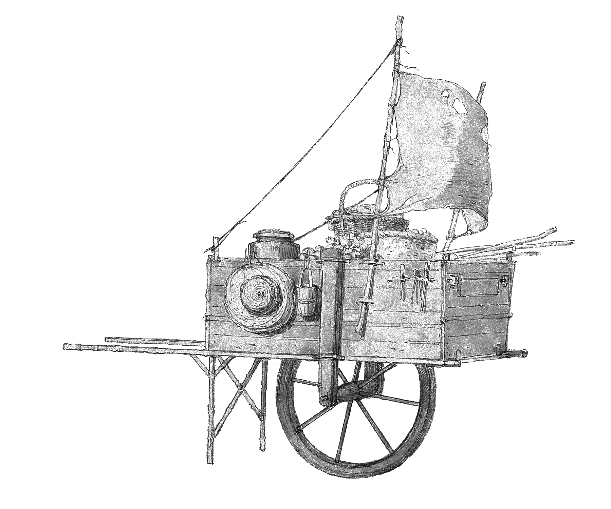
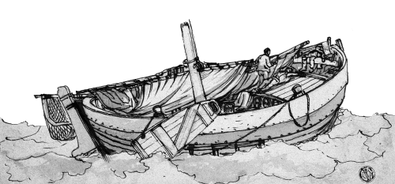

Grounded Fantasy
Within the NSR community, there are aspects that I find more interesting and aspects that I don't - I'm not hugely into dungeon crawls, for instance. They can be fun but I'm not motivated to write them.
What I'm interested in is what I've heard called "grounded fantasy". I'm not totally sure where I've heard it and I'm not sure if anyone has explicitly written about it - if so, let me know, because I'm curious if other people see the term differently. I'm sure that, as with most genres, everyone could come up with a slightly different definition of it.
I'll also note, because this is the Internet, that I enjoy a wide range of genres and they are all fun in their own way and none is inherently better than any other, this is just one that I like.
Tone
Grounded fantasy is neither grimdark, nor heroic, nor cozy. It's not gonzo but it's also not quite "realistic" - it's still a little larger than life. There can be elements of darkness, or of lightheartedness and whimsy, and most likely elements of both, but neither dominate. Grounded fantasy is typically fairly earnest, as opposed to satirical, or cynical, without being utopian, either.
Grounded fantasy happens on the scale of ordinary-ish people with ordinary-ish problems. It's not about a medieval farmer tending their vegetables and coming home to a nice pot of tea (that would be cozy fantasy), but it's maybe the kind of adventure a medieval farmer might daydream about. It's not about nobles or rulers; it's not about heroes; it's not about kingdoms or empires.
This is the most important part, to me. Over the years I have increasingly found myself interested in the lives of ordinary people, the kinds of people like you and me who don't make it into the history books. I want to imagine people whose lives I can more directly relate to, though I still want to imagine their lives being a bit more interesting than mine.
Grounded fantasy is not about "historical accuracy" per se, although I think it's common for people who like this genre to like cool facts about the past and want to sneak them into their games - things about folklore or herbalism or boats. Grounded fantasy is perhaps about appreciating how people in the past were not so different from people today, rather than enforcing some sort of barrier between modernity and a stereotyped version of the past. It especially is not about enforcing your hangups or bigotries about gender or sexual orientation or race or whatever as part of some (ironically very modern) "culture war".
Common setting elements
In grounded fantasy, violence is deadly, but death is not assumed, and this is what differentiates it from grimdark. In grimdark, you fight a dungeon full of skeletons and then get gruesomely disembowled or something and roll up a new character. In grounded fantasy, you try to avoid fighting a dungeon full of skeletons.
One way to explain how high lethality doesn't have to mean grimdark: I live in a high lethality world and I haven't died once. I've also never attempted to fight a bear and, if I find myself in an area with bears, I employ a variety of strategies to avoid even the risk of fighting a bear. These two facts are probably related.
In grounded fantasy, you're still a bit tougher than you are in real life: you can be shot by one arrow and then be back on your feet tomorrow and not worry about gangrene. You aren't so tough that you can shrug off getting hit by 5 arrows.
It also flips some other OSR-ish tropes on their head. Your character doesn't matter to the world, you're nobody special. But much like in real life, so what? You matter to your friends, to the community. And interpersonal relationships are more likely to matter in grounded fantasy. You are part of a larger society. You can't just roll into town, commit a bunch of crimes, mess things up for everyone, and expect people to be fine with it. But you aren't a disposable pawn, either.
NPCs tend to be important, as are factions. Interpersonal relationships tend to play a much bigger role than they do in more classic OSR games. Motivations for adventure might also be more pro-social: you are protecting the society you live in, solving an immediate problem that affects you and the people around you, or you fit a well-defined social role, albeit not one that sets you above other people.
In grounded fantasy, good and evil are fuzzy, and formal alignment is probably not present. If there are bandits, they aren't just sitting around twirling their mustaches - there might be a reason they turned to banditry, and a non-violent solution to the problem of them being there. But a non-violent solution isn't guaranteed, nor is the reason they turned to banditry necessarily a good one. The important part is that intelligent beings should have motivations and behave according to those motivations, even if they're unsympathetic ones.
With apologies to Brad Kerr, grounded fantasy tends to be where NSR-type games start wandering out of Door D&D and into Sticky D&D.
In grounded fantasy, magic is rare, or it's weird and neither convenient nor easy to control. It's something to approach with a sense of wonder and discovery. It also isn't common enough to affect day to day life or regular society; it exists entirely outside of society, as a series of exceptions. If it impacts society, it's only to help handwave aspects of medieval life that don't make sense to dwell on, such as why people aren't dying of minor infections all the time.
Grounded fantasy is often inspired by fairy tales, folklore, or history, more so than the greater implied setting of D&D-type games or the typical media listed in the Appendix N of those types of games.
Since power levels stay low, monsters should remain scary and powerful. Meeting a bear in the woods should never be mundane. In fact, anything dangerous should not become mundane.
Usually most characters in grounded fantasy are human. If they aren't human, there's something overtly supernatural and probably rare going on.
Games that fit this
Most games fall roughly into the rules-light NSR type category, although not all rules-light NSR games fit. Some story games also fall reasonably well into this category, though. This genre often tends to be at the intersection of the two.
A very incomplete list of games or adventures that fall under this category, based mostly on games that I own and/or have played:
- Cairn, depending on how you play it, especially if you are not doing a lot of dungeon crawling
- Beyond the Pale
- the parts of Frostwyck I have played so far
- Tannic
- Darkness Moves
- Caers and Crannogs
- A Traveler's Guide to Echelon Forest
- A Fistful of Feathers
- Corny Gron (I think, I've only skimmed it so far)
- Where the Wheat Grows Tall
- Mangayaw
- Ironsworn
- Wolves Upon The Coast
- Woodfall
- HOME (the supplement for building settlements)
- I don't think anyone else has heard of the Merovingian hack and it is now impossible to obtain, but that
- I'd also include supplements that go really deep into a specific subject like Tome of Tombs, Lowlife, or A Herbalist's Primer
Games that fit but are in a somewhat different genre
- Knights of the Road
- Wild Blue Yonder
- Fallen
- Mausritter but only when you're being particularly mousy
- Mouseguard
Things that partly fit
- Apothecaria
- pretty magic themed, but it's still a fairly low power magic
- Wise Women (likewise)
- Pariah
- also fairly high-magic but contextualizes it in a lower-power way that feels like it fits (I haven't played it)
- Wanderhome, especially if you keep some of the darker elements in to move it away from strictly "cosy"
- If you took the points of light setting from 4E and then played it with something else
My work that I think fits this
- Procedures To Discover the Path Ahead
- A Gathering Storm, especially the Cairn version
- What Remains on Copper Island (ish, leans a bit grimmer and with less social interaction)
- If I ever finish A Stone Sword in a Dark Forest
Blog posts that fall into this
- 20 Virtues and/or vices as a replacement for alignment
- Early draft of an oracle deck
- Replacing races with supernatural transformations
- Character retirement
- On religion
And a Cairn actual play that I think exemplifies what I'm going for, part 1 and part 2